Áres
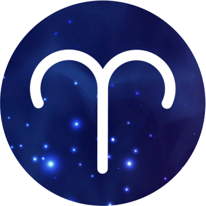Touro
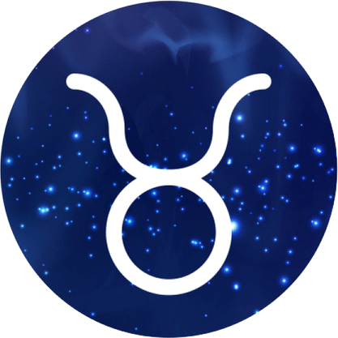Gêmeos
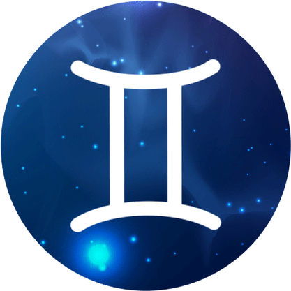Câncer
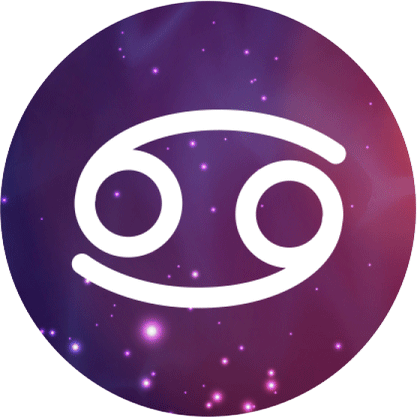Leão
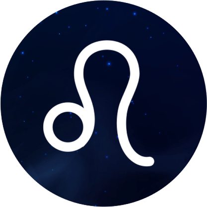Virgem
Libra
Escorpião
Sagitario
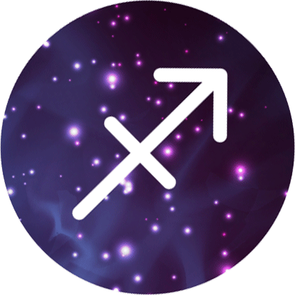Capricórnio
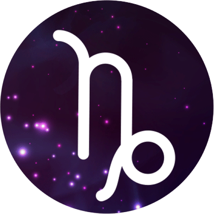Aquario
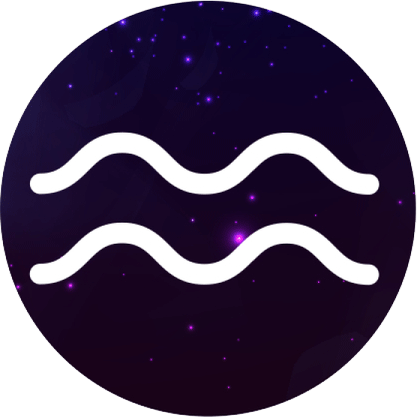Peixes
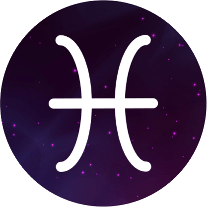Áres
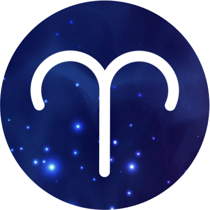21 de março 20 de abril
Quem tem sol em Áries costuma viver no agora; além de possuir um grande prazer em existir, ação e decisão também podem ser algumas de suas marcas. A liderança é uma característica forte no signo, que pode ser usada para o empreendedorismo
Touro
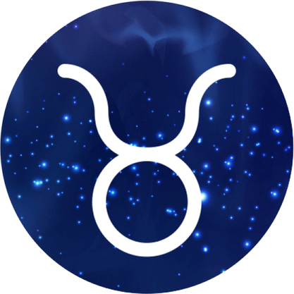21 de abril 20 de maio
Prazer e empatia lhe guiam agora. Busque evitar se doar de modo excessivo ou criar expectativas que os outros não possam cumprir, como alerta a tensão lunar com Sol e Marte. A Lua Cheia encontra Netuno no setor das amizades e tende a lhe fazer se dedicar às pessoas queridas.
Gêmeos
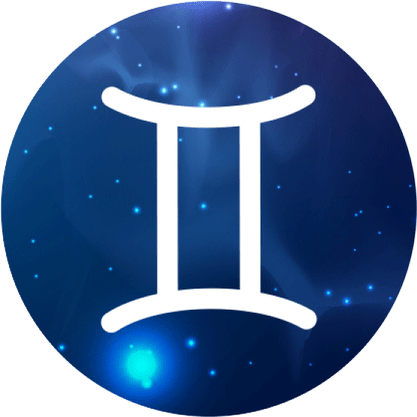21 de maio 20 de junho
É importante dar valor ao que está ao seu alcance e encarar com serenidade as frustrações. O exercício dos seus talentos tende a se intensificar com a Lua Cheia junto a Netuno no setor profissional, o que se mostra fonte de prazer se você não criar expectativas fora da realidade.
Câncer
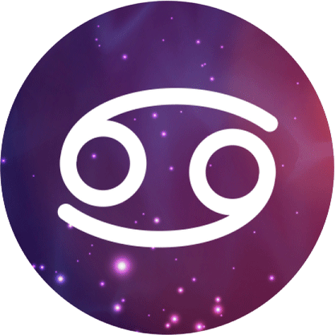21 de junho 22 de julho
Tente se estruturar e dar prioridade à saúde e ao bem-estar. A Lua Cheia e Netuno tendem a fazer você resgatar o prazer pela rotina, mas as idealizações podem prejudicar os aspectos práticos e ainda esbarrar em bloqueios temporários, dada a tensão com Sol e Marte.
Leão
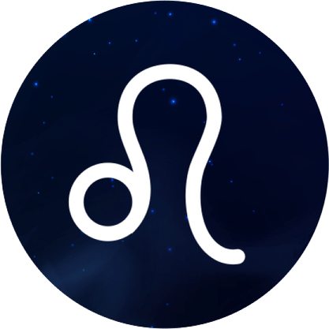23 de julho 22 de agosto
Devido à tensão com Sol e Marte, procure ser mais discreta sobre o que lhe incomoda para que possíveis conflitos não assumam maiores proporções. Valores elevados e uma visão humanizada da vida podem lhe fazer agir com solidariedade com o entorno, pois a Lua Cheia encontra Netuno.
Virgem
23 de agosto 22 de setembro
A Lua Cheia harmonizada a Netuno promove um mergulho sensível nas questões que se encontram no centro da sua vida, bem como a valorizar companhias com as quais você sinta uma conexão profunda. Evite, porém, sobrecarregar os outros com expectativas de reciprocidade. No amor, Lua e Netuno em tensão com Sol e Marte exigem mudanças em seu romance e à maneira como você lida com assuntos do dia a dia.
Libra
23 de setembro 22 de outubro
Busque valorizar suas amizades e também resgatar o prazer por sua própria companhia. Carências afetivas tendem a ganhar corpo com a Lua Cheia harmonizada a Netuno e tensionada a Sol e Marte, o que pode acabar sobrecarregando suas relações e lhe causa frustrações.
Escorpião
23 de outubro 21 de novembro
Tente se estruturar e dar prioridade à saúde e ao bem-estar. A Lua Cheia e Netuno tendem a fazer você resgatar o prazer pela rotina, mas as idealizações podem prejudicar os aspectos práticos e ainda esbarrar em bloqueios temporários, dada a tensão com Sol e Marte.
Sagitario
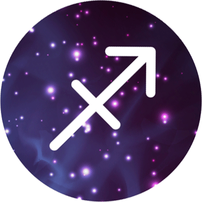22 de novembro 21 de dezembro
Você tende a estar em uma atmosfera romântica e sonhadora, evitando idealizações que escondam a realidade. Aflora seu potencial criativo com o encontro da Lua Cheia com Netuno no setor dos prazeres, de modo que suas ações podem dar um toque original ao seu dia.
Capricórnio
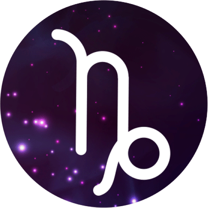22 de dezembro 20 de janeiro
Busque não deixar que suas carências afetem os gastos financeiros, como alerta a tensão com Sol e Marte. É preciso supri-las com prazeres que não lhe prejudiquem. A Lua Cheia transita harmonizada a Netuno no setor material, podendo despertar seu lado criativo e lhe fazer investir em seus sonhos.
Aquario
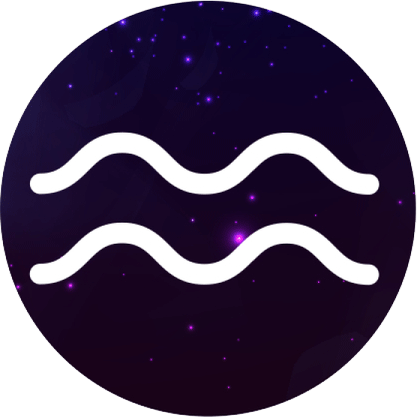21 de janeiro 18 de fevereiro
Procure saber lidar com incompatibilidades nas relações. Uma forte conexão emotiva com o lar pode ser sentida, com a Lua Cheia harmonizada a Netuno na área da família, enquanto que a criatividade tende a aflorar, o que contribui com as tarefas domésticas e gera prazeres.
Peixes
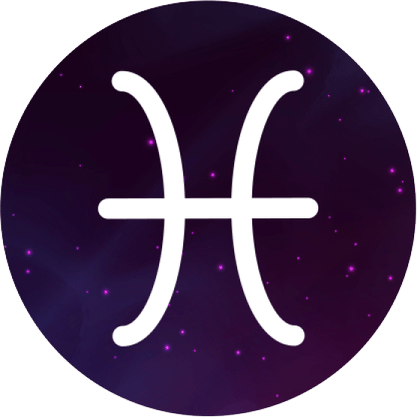19 de dezembro 20 de maço
O pensamento se reveste de imaginação criativa com a Lua Cheia harmonizada a Netuno no setor das ideias, levando você tanto a divagar sobre seus sonhos, como a expressá-los para o entorno. Tenha cuidado com a subjetividade excessiva, visto que a tensão com Sol e Marte sinaliza prejuízos de ordem prática. No campo afetivo, a sua história de amor merece atenção redobrada